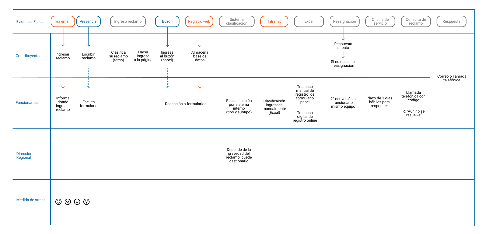

El Servicio de Impuestos Internos es un servicio público chileno que se encarga de la aplicación y fiscalización de todos los impuestos internos de Chile. Cuenta con diferentes canales de atención. Siendo la fuente oficial para gestionar reclamos, sugerencias o felicitaciones la plataforma web, para ello también se habilitan otros canales que no cuentan con un protocolo oficial o plazos de respuesta para el contribuyente. Recayendo todo el trabajo de respuesta y derivación en el Departamento de Remoto a cargo de César Fuentes.

Al iniciar el proceso de investigación nos encontramos con canales de comunicación muy diferentes entre el Servicio de Impuestos Internos y el contribuyente, muchos de estos canales tenían poca o nula conexión entre sí, y cada uno respondía a sus propios protocolos y características. Generando una gran incertidumbre entre los funcionarios. En base a lo anterior, nuestras primeras hipótesis frente al proyecto fueron:
4 semanas.
Rol en el proyectoInvestigacion de usuario, sketching, diseño de interacción y prototipo.
A través de sus representantes Roberto Abarca y Mireya Valdebenito el Servicio de Impuesto Internos (SII) nos entrega como desafío generar nuevas oportunidades de mejora para contribuir a mejorar el proceso de gestión de reclamos, sugerencias, orientaciones y reclamos de La Oficina de Gestión de la Experiencia del Contribuyente. Específicamente del área remota que se encarga de gestionar los casos ingresados a través de la plataforma web.
Para llevar a cabo este desafío se utilizó la metodología del Design Thinking. Este proceso metodológico se divide en 5 etapas donde investigamos y nos acercamos al usuario, a través de diferentes actividades, como por ejemplo:

Investigación de mercado
Esta herramienta consiste en realizar un estudio comparativo sobre los productos y servicios del área de interés, con el fin de detectar las mejores prácticas y cómo es su aplicación/funcionamiento. Está orientado a la mejora continua y, para la experiencia del usuario. Por esta razón, algunas de los factores que podemos tener en cuenta a la hora de llevarlo a cabo son efectividad, eficiencia, satisfacción general y percepción de la calidad.

Entrevista a usuarios
Se realizaron distintas entrevistas para empatizar y entender al contribuyente, principalmente sobre cómo es su experiencia realizando trámites de manera presencial en las oficinas del SII y navegando por la plataforma de reclamos, sugerencias, consultas y felicitaciones. Para llevar a cabo las entrevistas se realizó una pauta, en la cual se introduce con una presentación y contextualización, luego una serie de preguntas acerca de los dos canales dichos anteriormente y finalmente un agradecimiento.

Testeos a la plataforma actual
Se realizó un testeo con dos usuarias habituales de Servicio de Impuestos Internos, se les solicitó realizar un reclamo en la página correspondiente www.sii.cl, dando cuenta de todo el proceso y cuan accesible estaba la información que necesitaban para poder realizar el trámite dentro de la plataforma.
Para poder comprender qué es un Service Blueprint lo primero que debemos entender qué es un servicio. En su definición formal un servicio es un intercambio de valores entre dos o más personas, que ocurre en el tiempo, frecuentemente a través de múltiples puntos de contacto. Entonces un Service Blueprint en esencia es un mapa de estos puntos de contacto, que describe cómo sus cualidades tangibles e intangibles afectan la forma en que las personas se sienten y cuánto valor reciben. Como herramienta operativa permite visualizar los componentes de un servicio con el detalle suficiente para analizarlo, implementarlo y mantenerlo.
